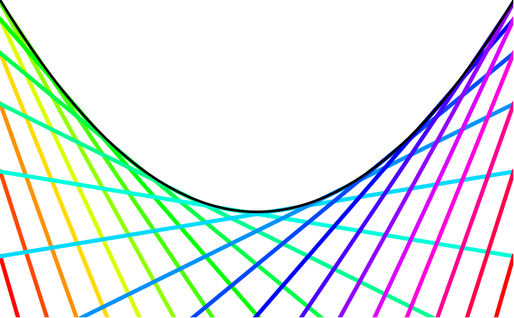
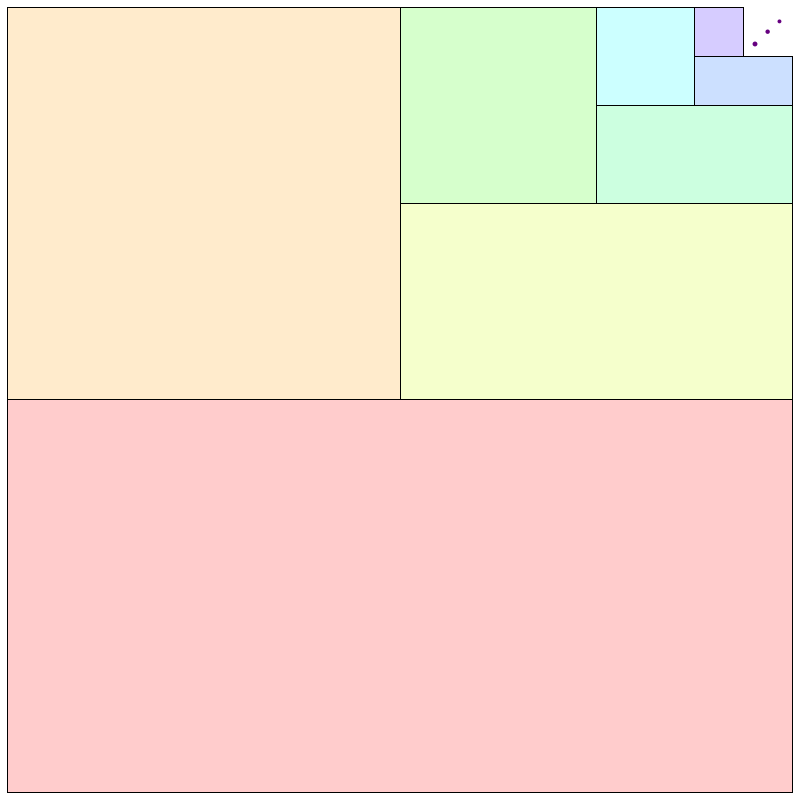
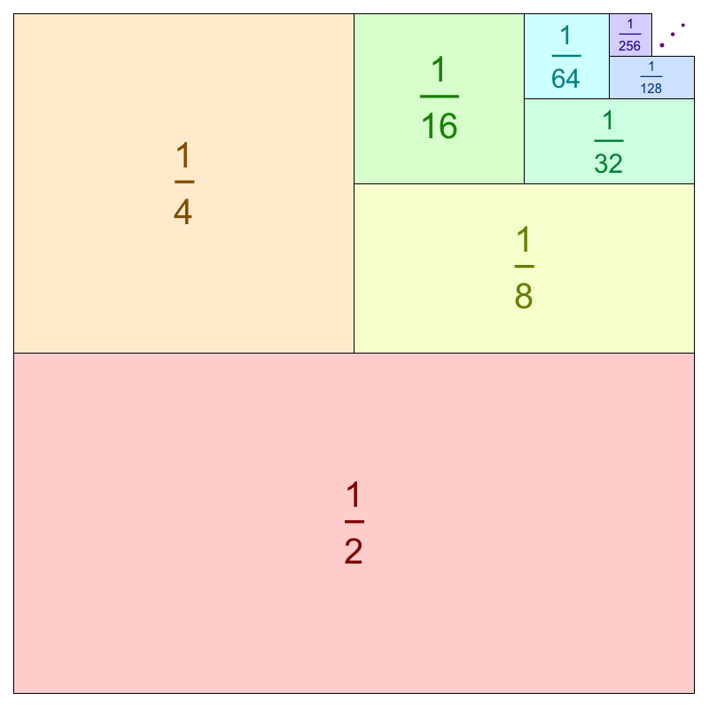
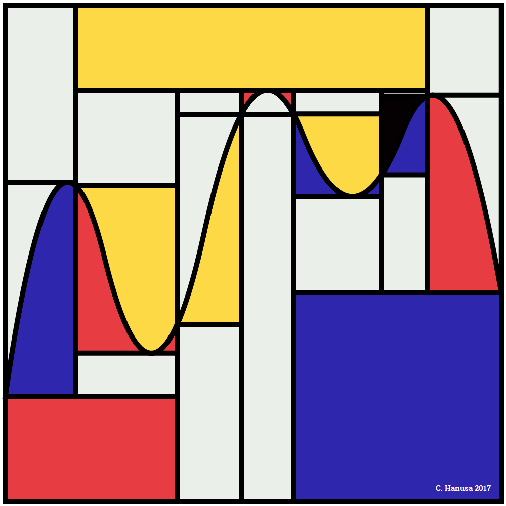
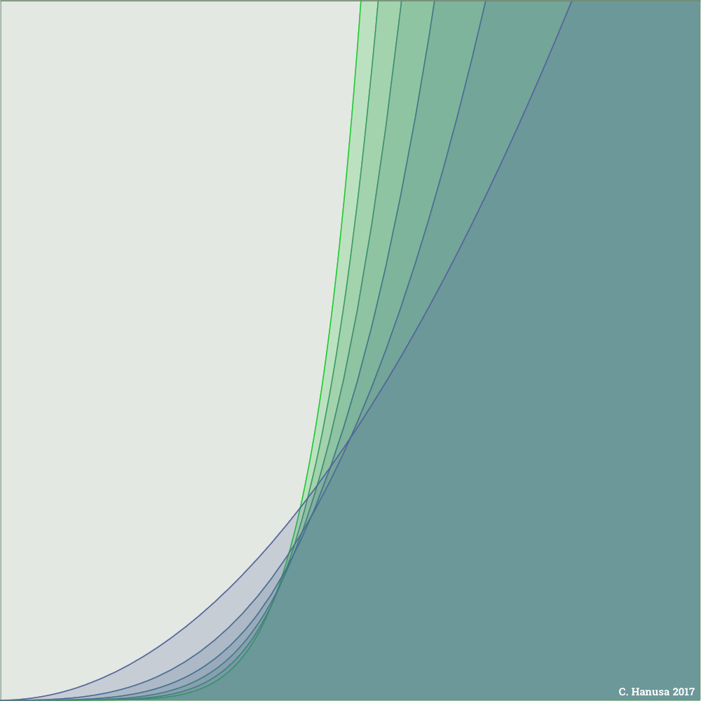
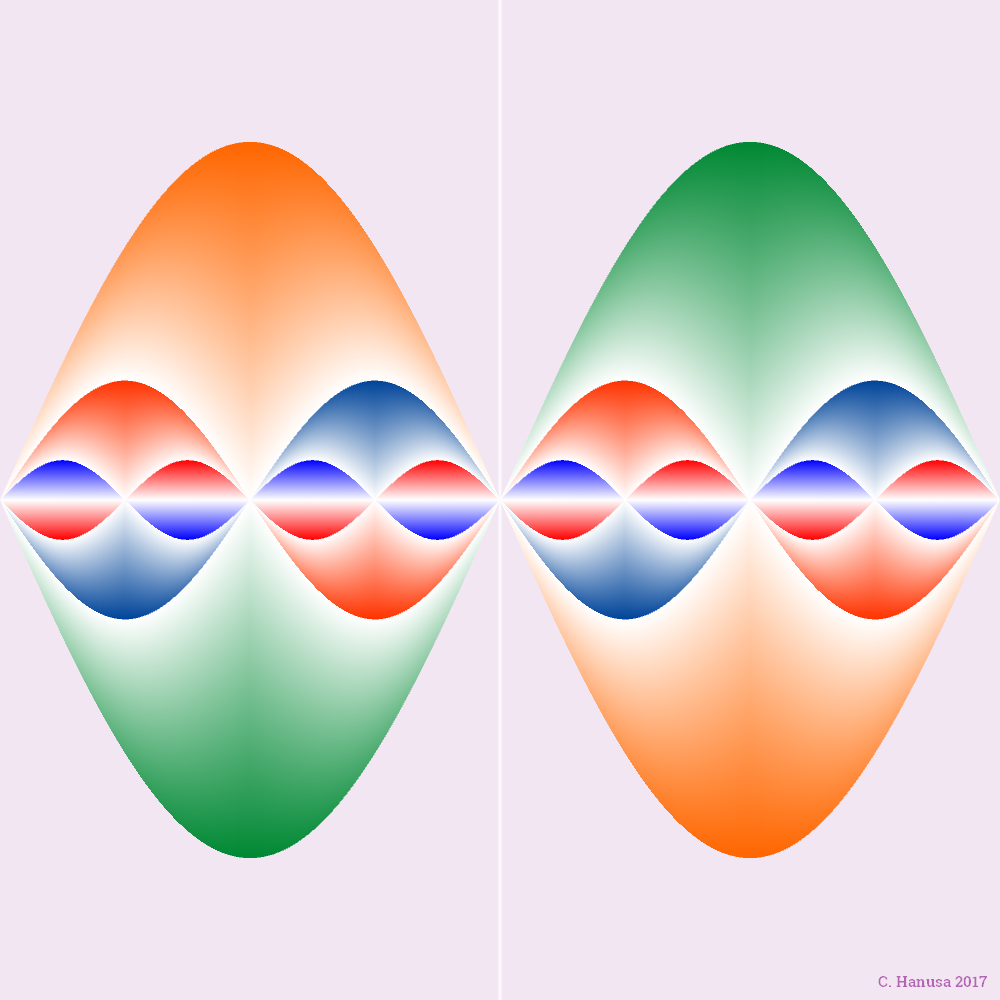
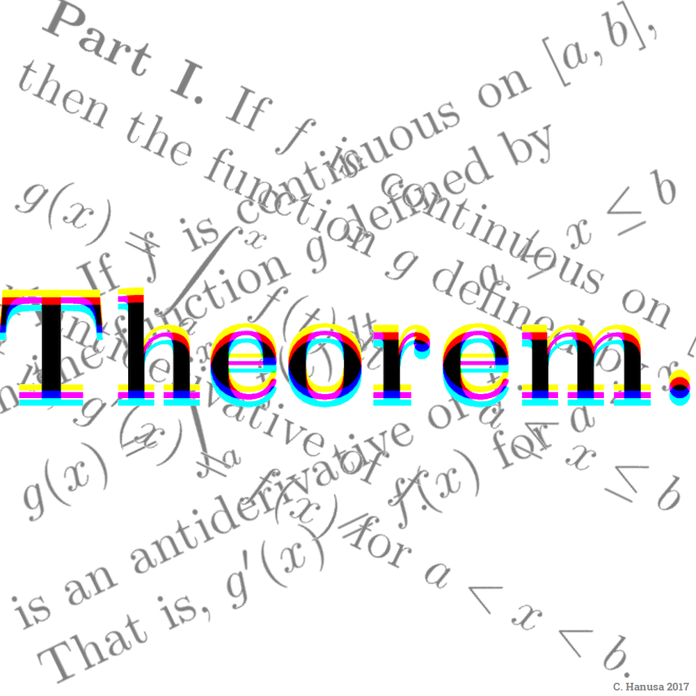
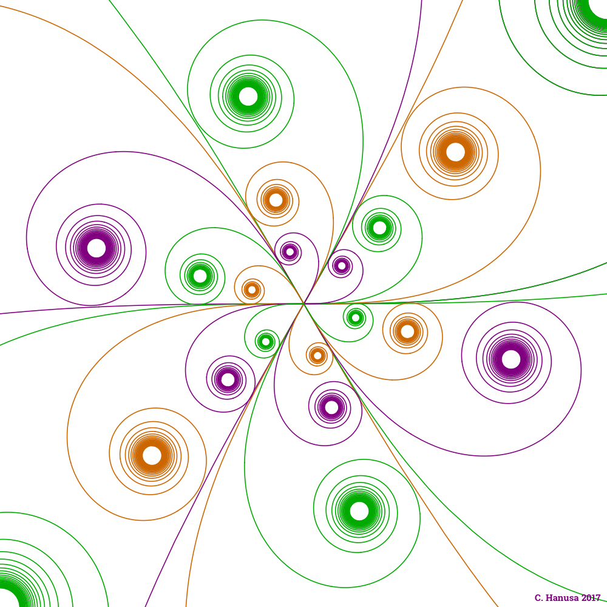
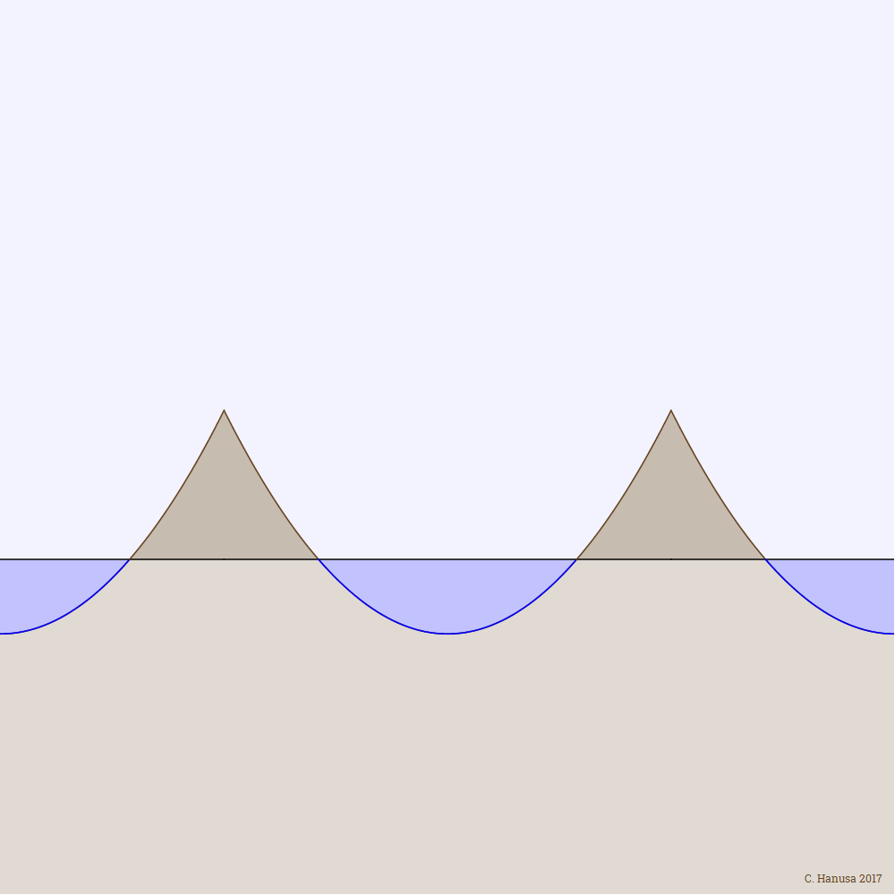
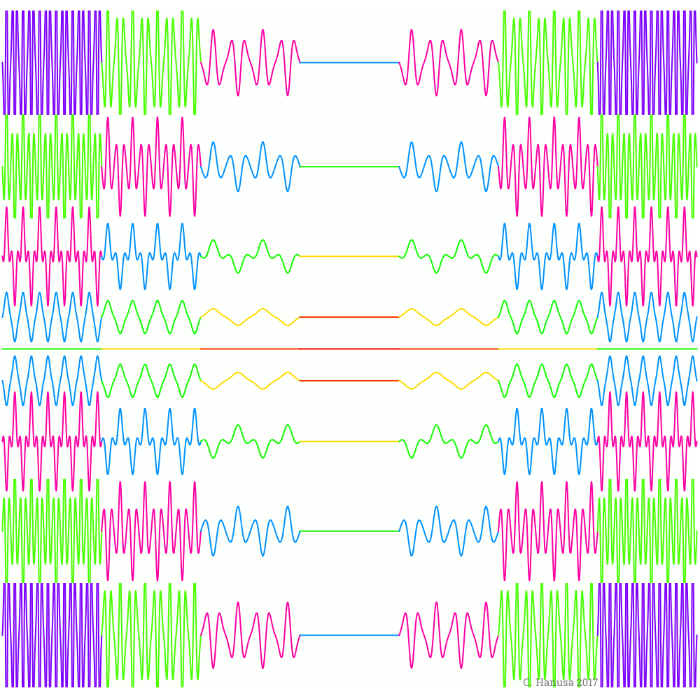

Calculus II, Fall 2017
Daily Topics and Homework
Check back often for homework assignments, tutorials, and key topics covered each day.
This schedule is approximate and subject to change!
Sections 3.7, 4.1, and Appendix B (3 classes)
Monday, August 28
In class:
- Art:

- Syllabus discussion '
- What are Derivatives?
- Need to Know List
- Section 3.7: Antiderivatives
{kind=link}
Wednesday, August 30
Before class:
- Log onto WebAssign. You must have access to WebAssign for this class. If you do not have access from a previous class, head over to purchase the book & access to webassign online from the publisher. I suggest one of the first two options. The first option is for access to WebAssign and a copy of the e-book. The second option is for access to WebAssign along with a physical book, and it also includes access to the e-book. You will need the class key qc 6174 1546.
- On WebAssign, complete the Homework Assignment for Section 3.7. You have ten tries to get the questions correct. If you feel shaky or get many incorrect, you should strongly consider taking Math 141 instead of Math 142.
- Email me at chanusa@qc.cuny.edu with the following four things.: (1) Your name, (2) Your class (Math 142 at 1:40 OR Math 142 at 3:10) (3) the email address where you are best contacted, (4) your graduation year.
- Thoroughly read the class web page including the syllabus and schedule. This should answer all the questions that you may have about the class. Next, take the syllabus quiz on WebAssign. Retake the quiz as many times as necessary to earn a score of 100%.
- Read through Section 3.7 to revisit the material from Monday. Skim through Appendix B: Sigma Notation to prepare for the lecture material on Wednesday.
- Watch this Khan Academy video about sigma notation.
In class:
- Art:

- Assessment Questions on Standard T1.
- Think Pair Share & Discussion
- Appendix B: Sigma Notation
- Section 4.1: Areas and Distances
- Using your calculator, Wolfram Alpha, Mathematica, Desmos.com
{kind=link}
{kind=link}
Wednesday, September 6
Before class:
- Read through Appendix B to revisit the material from last session.
- Complete the homework assignment on WebAssign about Appendix B.
- For each of the following terms, write down on a piece of paper:
(a) The precise definition given in the book
(b) A sentence or two explaining what the definition means to you
(c) An example of something satisfying the definition
(d) An example of something not satisfying the definition (A "non-example".)- antiderivative of a function
- differential equation
- Skim Section 4.1 to prepare for the lecture material.
In class:
- Art:

- Precise Definition Discussion
- Think Pair Share & Discussion
- Section 4.1: Areas
- Section 4.2: Riemann Sums
Sections 4.2 and 4.3 (3 classes)
Monday, September 11
Before class:
- Complete the homework assignment on WebAssign about Section 4.1.
- Prepare for your first assessment.
- Skim Section 4.2 to prepare for the lecture material.
In class:
- The first assessment. The Standards that will be assessed are
M1, C1, C2, T2, I1, and A1. Update: The standards that will be assessed are M1, C2, T1, and T2. In particular, you will have another opportunity to improve on your Standard T1 score. - Art:

Riemondrian. This image is a generative piece of art inspired by the work of Piet Mondrian. The curve is a spline based on a random set of points. Then the upper and lower Riemann sums are created for random subintervals. Random rectangles are placed, and random colors in the style of Mondrian are added to complete the effect. - Section 4.2: Definite Integrals
{kind=link}
Wednesday, September 13
Before class:
- Complete the homework assignment on WebAssign. (Including parts of Section 4.2.)
- Skim pages 218–220 and 223–227 to prepare for the lecture material.
- Note: There is now an assessment scheduled for Monday 9/25 so that it is not too long!
In class:
- Homework Discussion
- Using a calculator and computer for integrals
- Section 4.3: Evaluating Definite Integrals
- Section 4.2: Properties of Definite Integrals
- Art:

Sweeping Powers. The curves in this image are derivatives of powers of x.
{kind=link}
Monday, September 18
Before class:
- There will be the opportunity to take a reassessment in the last 10 minutes of class on Monday 9/18. If you would like to reassess a standard, send me an email no later than Friday at noon.
- Complete the homework assignment on WebAssign. (Includes parts of Sections 4.2 and 4.3.) This is a LOOONG Assignment since there it is full of calculations. Get started early!
- Practice using your calculator to get numerical solutions to integrals.
- Skim pages 206–208, 228–230, and 246–247 to prepare for the lecture material.
In class:
- Homework Discussion
- Section 4.1: The Distance Problem
- Section 4.3: Evaluating Definite Integrals
- Section 4.5: Integrals of Symmetric Functions
- Reassessment (Optional)
- Art:

Sinusoidal Symmetry. This work is inspired by functions that are symmetric—those that are odd (f(-x)=-f(x)) or even (f(-x)=f(x)). We see that ∫-aaf(x) dx=0 for an odd function and ∫0af(x) dx=∫-a0f(x) dx for an even function.
{kind=link}
No class on Wednesday, September 20.
- Continue practicing how to take integrals!
- Here's a Khan Academy self test
- Practice using your calculator to evaluate Riemann Sums.
Theorems and Section 4.4 (3 classes)
Monday, September 25
Before class:
- Complete the homework assignment on WebAssign. (Includes parts of Sections 4.1, 4.3, and 4.5.)
- Prepare for your second assessment.
- Remember to send me an email by noon Tuesday 9/26 if you wish to reassess any of the 8 standards so far.
In class:
- The second assessment. The Standards that will be assessed are M3 (Calculator and Computer Skills), C1 (Concept of an integral), T3 (Properties of Integrals), and I1 (Basic Integrals).
- What is a Theorem?
- Art:

Theorem. This work is inspired by the Fundamental Theorem of Calculus. The two parts are typed in LaTeX, rotated, and overlapped. Then the words are covered by a CMYK distillation of the word that overshadows everything.
{kind=link}
Wednesday, September 27
Before class:
- For each of the theorems
- Theorem 4.2.3 (p212)
- The Evaluation Theorem (p224)
- Theorem 4.5.6(b) (p246)
(a) Write down the precise statement of the theorem given in the book
(b) Highlight in one color the hypotheses of the theorem and highlight in another color the conclusion of the theorem.
(c) An example of something that does satisfy the hypotheses of the theorem.
(d) Explain in your own words what the theorem implies about your example in part (c).
(e) An example of something that DOES NOT satisfy the hypotheses of the theorem.
(f) Explain in your own words what the theorem implies about your example in part (e). Bring this piece of paper to class Wednesday 9/27. - Remember to send me an email by noon Tuesday 9/26 if you wish to reassess any of the 8 standards so far.
In class:
- Group discussion about theorems.
- Section 4.4: The Fundamental Theorem of Calculus
- Art:

Euler Spiral Flower. This work is inspired by the Fresnel functions, which are defined as an integral. Using the Fresnel functions as the x- and y-coordinates of a parametric curve gives the Euler spiral, which I have rotated and scaled multiple times to give this picture. The coloring is based on the possible permutations of the three colors orange, green, and purple.
{kind=link}
Monday, October 2
Before class:
- Send me an email by noon Friday if you wish to reassess any of the 8 standards so far in class Monday 10/2. You may reassess two standards. (If you are in the 1:40 class, show up at 1:30 if you want to reassess two standards and show up at 1:40 if you want to reassess one standard.) (If you are in the 3:10 class, reassessments will be at the end of class.)
- Complete the homework assignment on WebAssign. (Includes parts of Section 4.4.)
- Work outside of class on calculus for one hour with a classmate. Write one paragraph about something that you learned or experienced that you would not have if you had worked alone. Also write down the name of the person you met with and when you met! I will collect this paragraph Monday. This is the first of a weekly set of group work paragraphs that will count toward Standard M4.
In class:
- Homework Discussion
- Section 4.4: FTC Integrals, Average value and Mean value
- Reassessment (Optional)
- Art:

Average Vague. This minimalist work is inspired by the Average value of a function. The colors are added to highlight the equivalent areas and the oceanic scene.
{kind=link}
Sections 4.5, 5.1, and 5.6 (5 classes)
Wednesday, October 4
Before class:
- Notice that certain standards have been updated (including C3, I3, A1), and certain standards have been split apart (including M3-M6 and I1-I5). I am hoping that this provides some additional clarity.
- Complete the homework assignment on WebAssign. (Includes parts of Section 4.4.)
- Prepare for your third assessment.
In class:
- The third assessment. The Standards that will be assessed are A1 (Particle Motion), M2 (Theorems), C3 (Key Theorems), and I3 (FTC Integrals).
- Section 4.5: Substitution Rule
- Art:

Compositions Composition. With u-substitution, we are able to integrate much more interesting functions. This is a colorful visualization of a few of them.
{kind=link}
No class on Monday, October 9.
- Practice the substitution rule. Over and over.
- Find time to meet with a classmate. Practice and practice some more.
Wednesday, October 11
Before class:
- Send me an email by noon Tuesday if you wish to reassess any of the 12 standards so far on Wednesday or Thursday this week.
- Complete the homework assignment on WebAssign. (Includes Section 4.5.)
- If you run into issues with your homework, bring them to class Wednesday for us to discuss.
- Work outside of class on calculus for one hour with some classmates. Write one paragraph in which you reflect on an experience you have had with making mistakes and failing in a math class that has helped you in your learning process. Share this experience with your classmates. Add one or two sentences to your writeup reflecting on what you learned from the experiences your classmates shared. Also write down the name of the people you met with and when you met! I will collect this writeup Wednesday. This is the second of a weekly set of group work paragraphs that will count toward Standard M4.
In class:
- The first half of class will be Homework Discussion --- bring your questions!!
- Section 5.1: Inverse Functions
Monday, October 16
Before class:
- There is no WebAssign homework today. Please take the time to read through Section 5.1 (Inverse Functions) and Section 5.6 (Inverse Trigonometric Functions). We are going to discuss these sections in class on Monday.
In class:
- One-to-one functions
- Section 5.1: Inverse Functions
- Section 5.6: Inverse Trigonometric Functions
Wednesday, October 18
Before class:
- The times for reassessments this week will be on Wednesday 9-10am and Thursday 9-11:30am and Thursday 1-3pm. Send me an email by noon Tuesday if you wish to reassess up to two standards.
- Complete the homework assignment on WebAssign. (Includes Sections 5.1 and 5.6.)
In class:
- The first 20 minutes of class will be Homework Discussion --- bring your questions!!
- Sections 5.1 and 5.6: Derivatives of Inverse Functions
Sections 5.2, 5.3, 5.4, and 5.5 (4 classes)
Monday, October 23
Before class:
- Complete the homework assignment on WebAssign. (Includes Sections 5.1 and 5.6.)
- Work outside of class on calculus for one hour with some classmates. Work together to study for Wednesday's assessment. Before you meet with your classmates, look through this checklist and think about all the ways in which you have studied for math classes in the past. Talk with your classmates about the ways you have studied for math classes in the past. Write a paragraph discussing which of these methods have been the most fruitful in the past and why. Also choose one NEW study technique that you (and your classmates) will try to use this semester, and include this in your paragraph too! Also write down the name of the people you met with and when you met! I will collect this writeup in class. This is the third of four weekly group work paragraphs that will count toward Standard M4.
In class:
- Homework Discussion on recent homeworks
- Exponents and Logarithms: Sections 5.4, 5.3, and 5.2
Wednesday, October 25
Before class:
- Review your recent homework assignments on WebAssign and prepare for the assessment. I suggest preparing for the assessment with your classmates.
- You may also want to get an early start the next homework assignment on WebAssign.
- The times for reassessments this week will be Wednesday 9-10am, Wednesday 12:30-1:30pm and Thursday 9-11:30am and Thursday 1-3pm. Send me an email by noon Tuesday if you wish to reassess up to two standards.
In class:
- The fourth assessment will take 30 minutes. The Standards that will be assessed are I2 (substitution rule), T4 (inverse functions), I4 (integrals of inverse functions).
- Calculus of Exponentials and Logarithmic functions: Sections 5.2–5.4
Monday, October 30
Before class:
- Complete homework assignments #13 and 14 on WebAssign. (Includes Sections 5.2–5.4.)
- The times for reassessments this week will be Wednesday 9-10am, Wednesday 12:30-1:30pm, Thursday 9-11:30am and Thursday 1-3pm. Make sure to take full advantage of these opportunities to improve your semester grade.
In class:
- Homework discussion
- Calculus of Exponentials and Logarithmic functions: Sections 5.2–5.4
- Logarithmic Differentiation: Sections 5.2–5.4
Wednesday, November 1
Before class:
- Complete the homework assignment on WebAssign. (Includes Sections 5.2–5.4.)
In class:
- Homework discussion
- Exponential growth and Decay: Section 5.5
Sections 7.1, 7.2, and the Goblet Project (4 classes)
Monday, November 6
Before class:
- Complete the homework assignment on WebAssign. (Includes Section 5.5.)
- Prepare for Wednesday's Assessment.
- The times for reassessments this week will be Wednesday 9-10am, Wednesday 12:45-1:30pm, Thursday 9:30-11:30am, and Thursday 1-3pm.
In class:
- Homework Discussion
- Integrals as Slicing Mechanism: A= ∫ dA, V= ∫ dV, and L= ∫ dL
- Section 7.1: Areas between Curves
Wednesday, November 8
Before class:
- Review your recent homework assignments on WebAssign and prepare for the assessment. I suggest preparing for the assessment with your classmates.
- As a reminder, you can see the scores on file for all the standards by logging into Gradesly. Find our class, use your CUNYFirst ID as your user name and your First Name (Capitalized) as your password.
In class:
- The fifth assessment will take 40 minutes. The Standards that will be assessed are C4 (Logarithmic and Exponential Functions), I5 (Exponential and Logarithm Calculus), and A2 (Exponential Growth and Decay). (No standard on Logarithmic Differentiation.)
- Section 7.1: Areas between Curves
- Section 7.2: Volume from Parallel Slices
Monday, November 13
Before class:
- Complete the homework assignment on WebAssign. (Includes Sections 7.1 and 7.2.)
- The times for reassessments this week will be Wednesday 9-10am, Thursday 9:30-11:30am, and Thursday 1-3pm. (Sorry, Wednesday free hour does not work this week.)
- Read carefully through the Project page of this webpage. Think about who you would like to work with on your project.
- Find Mathematica in a computer lab on campus or register for and download Mathematica to your home computer.
In class:
- Homework Discussion
- Section 7.2: Disk / Washer Method
- Information about the project.
Wednesday, November 15
Before class:
- Complete the homework assignment on WebAssign. (Includes Section 7.2.)
- The times for reassessments this week will be Wednesday 9-10am, Thursday 9-11:30am and Thursday 1-3pm. (Sorry, Wednesday free hour does not work this week.)
- Find Mathematica in a computer lab on campus or register for and download Mathematica to your home computer. If you have installed it on a laptop, bring it to class on Wednesday.
In class:
- TODAY WE ARE MEETING IN KIELY 236. Enter through Kiely 226 on the South side of the building.
- Link to information about 3D Design in Mathematica.
- A tutorial about plotting functions in Mathematica.
- Project Work Day
Monday, November 20
Before class:
- Work with your groupmates on the project.
- This week, reassessments will take place during the last 20 minutes of class on Wednesday.
- Talk with your classmates about the discussion you have had this semester related to the process of learning mathematics. Has it changed the way you study for a math class or for any other class? Will you continue to use these methods in the future? Write one paragraph reflecting on these questions. Also write down the name of the people you met with and when you met! I will collect this writeup Monday. This is the last of a weekly set of group work paragraphs that will count toward Standard M4.
In class:
- Turn in your paragraph
- Homework Questions
- Section 7.3: Cylindrical Shell Method
Wednesday, November 22
Before class:
- Complete the homework assignment on WebAssign. (Includes Section 7.2.)
In class:
- Homework Discussion
- Section 7.4: Arc Length
- Reassessments will take place during the last 20 minutes of class.
Monday, November 27
Before class:
- Enjoy Thanksgiving.
- Work with your groupmates on the project. Your final goblet is due next Monday.
- The times for reassessments this week will be Wednesday 9-10am, Wednesday 12:45-1:30pm, Thursday 9:30-11am, and Thursday 1-3pm. Unfortunately, I am not available 11am-1pm. Please email me by Tuesday with which standards you would like to reassess.
In class:
- Homework Questions
- Section 7.7: Differential Equations
Wednesday, November 29
Before class:
- Review your recent homework assignments on WebAssign and prepare for the assessment. I suggest preparing for the assessment with your classmates.
In class:
- The sixth assessment will take 40 minutes. The Standards that will be assessed are A3 (Area between curves), C5 (Integrals as Slicing Mechanism, Theory), and A5 (Integrals as Slicing Mechanism, Application)
Monday, December 4
Before class:
- Work with your groupmates on the project. Your final goblet files are due TODAY.
- If you missed submitting a paragraph for Standard M4 earlier in this semester, you may submit these paragraphs no later than today for full credit. This means that everyone should have no trouble getting a 4 on Standard M4.
- The times for reassessments this week will be Wednesday 9-10am, Wednesday 12:45-1:30pm, Thursday 9:30-11:30am, and Thursday 1-3pm. Please email me by Tuesday with which standards you would like to reassess.
In class:
- Homework Questions
- Section 7.7: Differential Equations
- Course Evaluations
Wednesday, December 6
Before class:
- Review your recent homework assignments on WebAssign and prepare for the assessment. I suggest preparing for the assessment with your classmates.
In class:
- The seventh assessment will take 25 minutes. The Standards that will be assessed are C6 (Differential Equations) and A6 (Solving Differential Equations)
- Final Exam Practice
Monday, December 11
Before class:
- Finish writing your two-page final report and paragraph about group dynamics.
- Practice some final exam problems.
- The times for reassessments this week will be Monday 4:30-5:30pm and there will also be availability Tuesday. Please email me by Sunday with which standards you would like to reassess.
- Please complete the course evaluations.
In class:
- Turn in your final report and paragraph about group dynamics.
- Look at the printed goblets.
- Final Exam Homework Discussion.
Wednesday, December 13, 10:45am - 1:15pm
Final Exam — Science Building, Room C201
Final Exam — Science Building, Room C201
- By 11:59pm: Bonus Point Opportunity: Letter to Future Students.
I ask that you write a letter to future students of Math 142. If you think back to the beginning of the the semester, what would have been nice to know about this class that you know now? How would you explain the class to an incoming student? What advice do you have for someone just starting in Math 142?
You should email me this letter to future students by the night of Wednesday 12/13 at the very latest. Please write your letter in the body of the email; DO NOT create a Word file. Your letter should be two or more paragraphs long (each paragraph should be 5-7 sentences). If you submit this to me, then you will increase your final exam grade by 10 points. And perhaps your letter will be read by students the next time I teach this class!